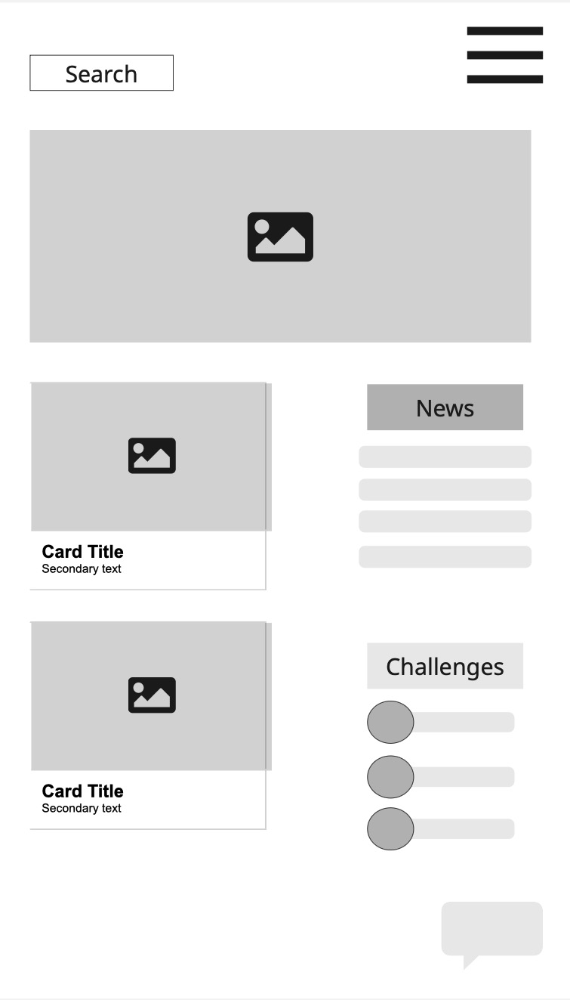
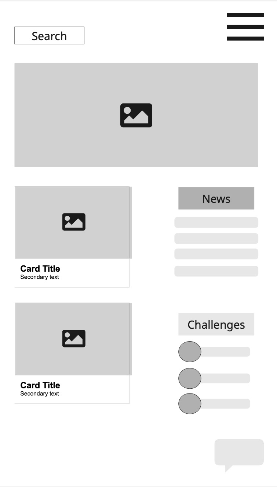
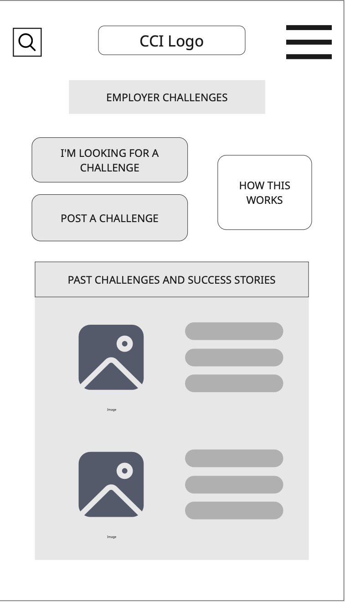
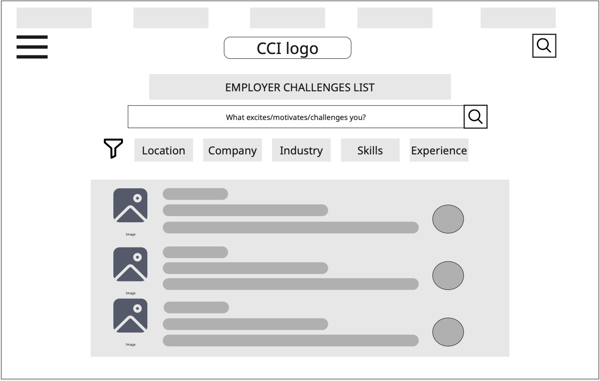
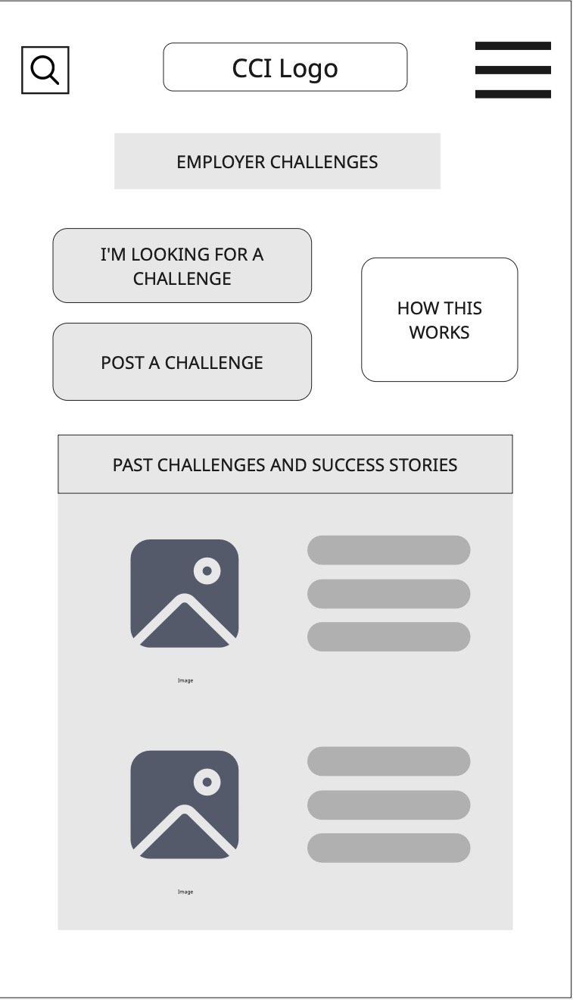
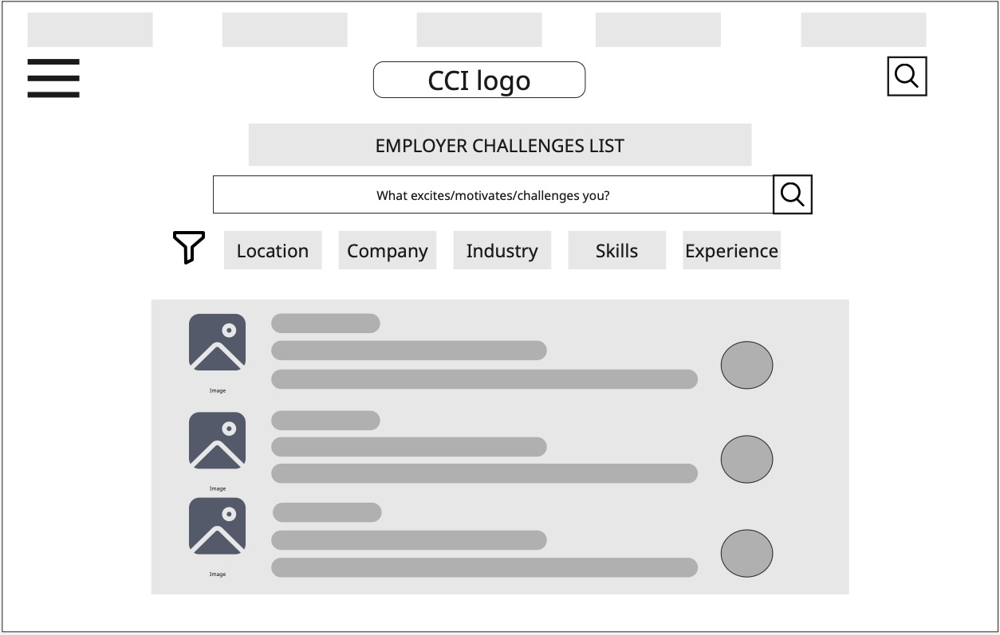
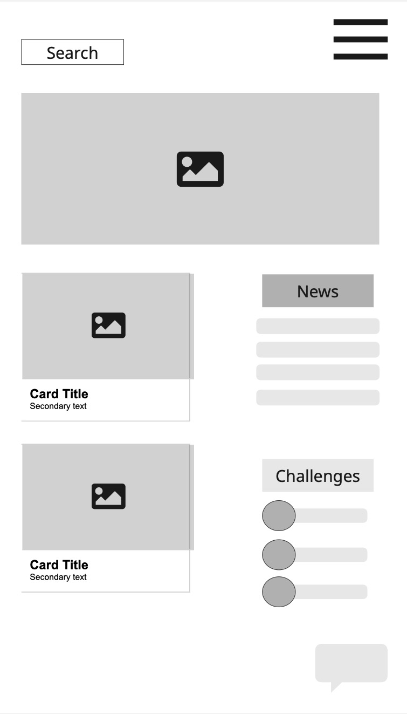
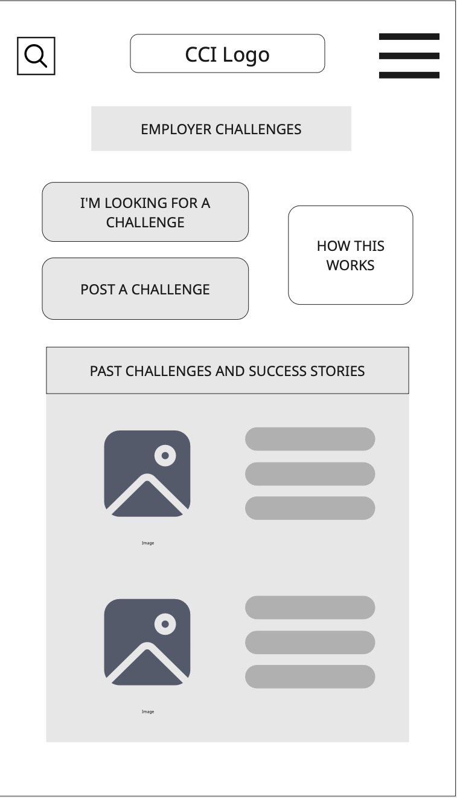
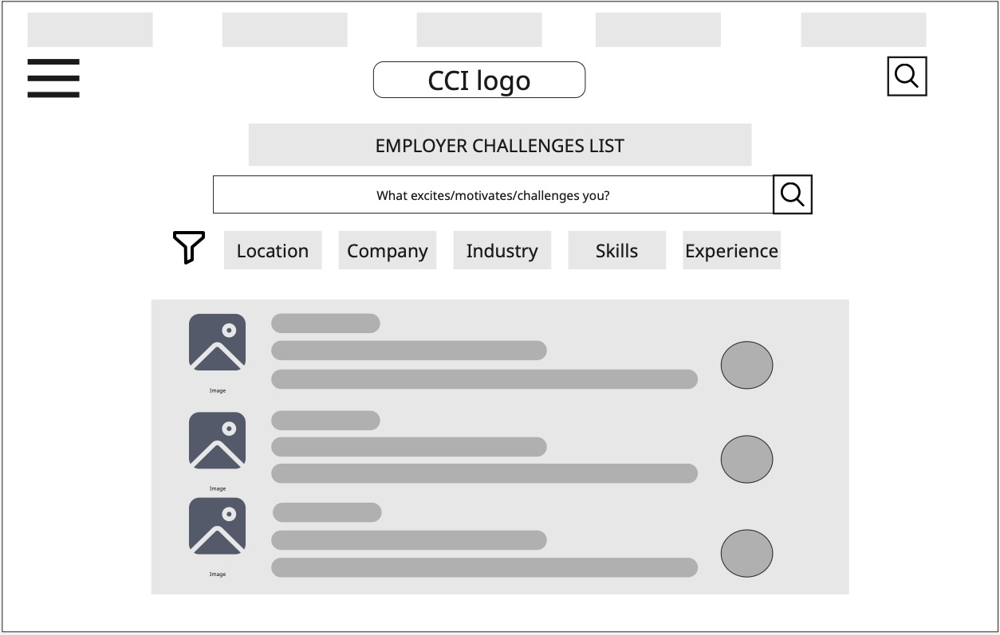

Page Layouts
![Homepage Wireframe for Desktop highlights the core features of the site, with the header, navigation bars,
cards denoting the main sections of the site, news, and key feature of employer challenges displayed prominently.
This links to the client need for intuitive navigation and clear pathways, the user story of wanting easy ways
to showcase skills, and accessibility principles of low jargon, clear hierarchy, and scannable layout that creates
a strong visceral first impression of professionalism.](assets/homepage_wireframe_desktop.jpg) 

 




The focus of this section of the Style Guide is on Visceral Design, which addresses the initial impact and emotional response users have when they first encounter a product or interface. It ensures the user has a positive first impression of the site based on its structure and layout. The style guide has been divided into three sections based on Don Norman's three levels of Emotional design: Visceral, Behavioural and Reflective.



Click on a colour to learn more about how it’s used in the design system.
Our typography choices balance innovation with readability. Headings (H1 and H2) use Michroma for a futuristic, tech-forward aesthetic, while subheadings and body text use Lexend for accessibility and clarity.
Heading 1 – Michroma |
Used for: Page titles, main headers. Style: Bold, 2.5rem. Purpose: Creates strong first impressions and highlights the site’s forward-thinking, tech-driven identity. |
Heading 2 – Michroma |
Used for: Section headings. Style: Semi-bold, 2rem. Purpose: Maintains consistency with H1 while emphasising key sections in a sleek, modern way. |
Heading 3 – Lexend |
Used for: Sub-section headings. Style: Normal weight, 1.5rem. Purpose: Improves readability and provides hierarchy without overpowering main headings. |
Heading 4 – Lexend |
Used for: Minor labels, callouts, card
titles. Style: Normal weight, 1.2rem. Purpose: Ensures clarity and supports scannability across components. |
Body Text – Lexend |
Used for: Paragraphs, lists, general content. Style: Regular, 1rem. Purpose: Highly legible, supporting accessibility and ease of reading across long passages of text. |